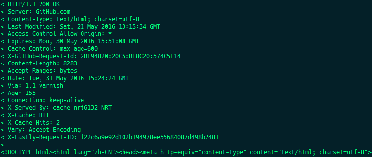

写在前面
如今网络已经无处不在，人们通过网络获取浏览各种信息，其中，大部分都是通过浏览器访问各种网页来获取我们想要的信息，那么浏览器与网页(服务端)究竟是如何通信的呢？这就得从HTTP协议说起了，浏览器获取网页信息都是基于HTTP协议来处理的。
概念
HTTP（HyperText Transfer Protocol，超文本传输协议）是互联网上应用最为广泛的一种网络协议。设计HTTP最初的目的是为了提供一种发布和接收HTML页面的方法。通过HTTP或者HTTPS协议请求的资源由统一资源标识符（Uniform Resource Identifiers，URI）来标识。HTTP是一个应用层协议，由请求和响应构成，是一个标准的客户端服务器模型。其具有如下特点：
支持客户/服务器模式。
简单快速：客户向服务器请求服务时，只需传送请求方法和路径。请求方法常用的有GET、HEAD、POST。每种方法规定了客户与服务器联系的类型不同。由于HTTP协议简单，使得HTTP服务器的程序规模小，因而通信速度很快。
灵活：HTTP允许传输任意类型的数据对象。正在传输的类型由Content-Type加以标记。
无连接：无连接的含义是限制每次连接只处理一个请求。服务器处理完客户的请求，并收到客户的应答后，即断开连接。采用这种方式可以节省传输时间。
无状态：HTTP协议是无状态协议。无状态是指协议对于事务处理没有记忆能力。缺少状态意味着如果后续处理需要前面的信息，则它必须重传，这样可能导致每次连接传送的数据量增大。另一方面，在服务器不需要先前信息时它的应答就较快
PS：尽管TCP/IP协议是互联网上最流行的应用，HTTP协议中，并没有规定必须使用它或它支持的层。事实上，HTTP可以在任何互联网协议上，或其他网络上实现。HTTP假定其下层协议提供可靠的传输。因此，任何能够提供这种保证的协议都可以被其使用。因此也就是其在TCP/IP协议族使用TCP作为其传输层。
工作流程
HTTP协议的通信过程永远是客户端发起请求(request)，服务器回送响应(respone)，如下图所示：

一个完整的HTTP操作称为一个事务，其流程可分为四步：
建立连接(TCP三次握手)
客户端发送一个请求报文给服务器
服务器响应对应信息
客户端接收信息，然后断开连接
请求和响应详解
请求报文
请求行：由请求方法、URL和HTTP版本组成
eg：GET /index.html HTTP/1.1
请求方法
GET：请求获取URI所标识的资源
HEAD：请求获取URI所标识的资源，但不传回资源的文本部分
POST：向指定URI资源提交数据，请求服务器进行处理
PUT：向指定URI资源上传其最新内容
DELETE：请求服务器删除URI所标识的资源
TRACE：回显服务器收到的请求，主要用于测试或诊断
OPTIONS：请求URI资源所支持的HTTP请求方法
CONNECT：HTTP/1.1协议中预留给能够将连接改为管道方式的代理服务器。通常用于SSL加密服务器的链接
URL
请求的资源路径
协议版本
现在大部分为HTTP/1.0 和 HTTP/1.1
请求头部
eg：host:www.google.com
host为必选，其他都为可选参数
空行
消息体
请求所带的文本
响应报文
状态行：由协议版本、状态码和描述信息组成
eg：HTTP/1.1 200 OK
协议版本
状态码：用于告诉客户端，服务器是否产生预期的响应
1XX：提示信息，表示请求已被成功接收，继续处理
2XX：成功，表示请求已被成功接收，理解
3XX：重定向，要完成请求必须进行更进一步的处理
4XX：客户端错误，请求有语法错误或请求无法实现
5XX：服务器端错误，服务器未能实现合法的请求
描述信息
响应头部
空行
消息体
一个例子
访问codecc.xyz首页
- Request，首行为请求行，其余为请求头部

- Respone，首行为响应状态行，空行前为响应头部，其余为响应数据
